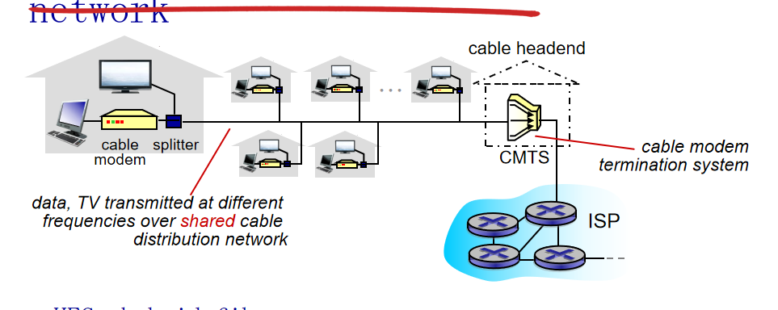
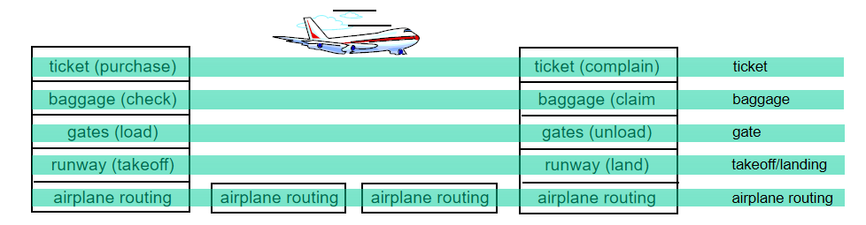
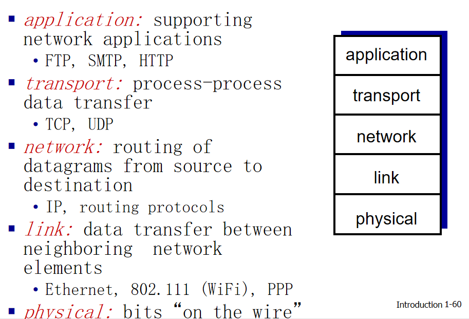
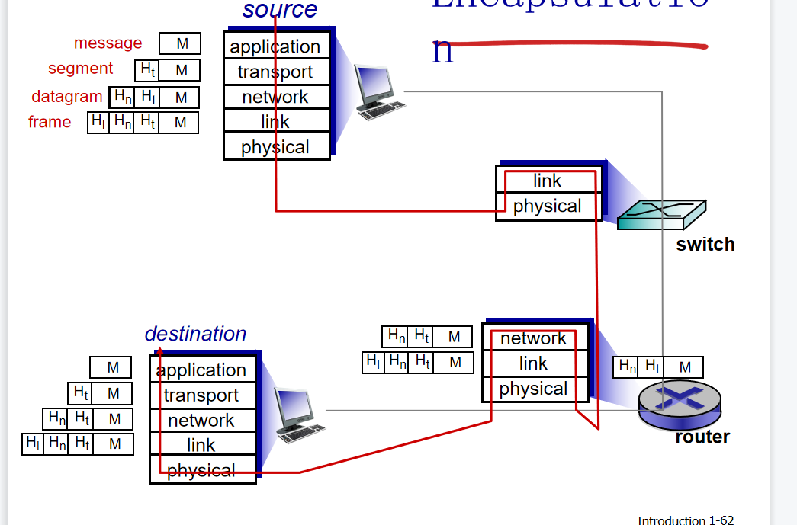

基本知识
计算机网络的目的
通过本书第一章和以前的学习，计算机网络的目的可以概括为实现主机与主机（host）之间，或者说端系统与端系统（end system）之间的交流。
它们连接的媒介就是通信链路（communication link）和分组交换机（packet switch）
而communication link基本有这几种，同轴电缆、铜线、光纤。packet switch有链路层交换机（link-layer switch），路由器（router）。
一个分组经过一系列通信链路和分组交换机称为通过该网络的路径（route、Path）。
端系统通过 因特网服务提供商(internet service provider, ISP) 接入因特网。
end system、packet switch和其他的因特网部件都要运行一系列的协议（protocol）
我们在浏览网页或者打开app时可以发现它们同时有着媒体、文字、和图片，而这些涉及到多个交换数据的end system这种被称为分布式应用程序（distributed application）
套接字接口（socket interface）这个端口规定了一个end system上的程序向另一个end system上的程序的数据交换方式。
协议（protocol）
定义了在两个或多个通信实体之间交换的报文的格式和顺序，以及报文发送或接收一条报文或其他时间所采取的动作。
即发送怎样的报文，发送和接收的方式是怎样的
网络边缘
网络边缘通常指host或者说end system。
接入网
简单地说就是将end system接入其边缘路由器（edge router）
数字用户线（Digital subscriber Line DSL），比如用户使用本地电话线接入因特网，这里的ISP为本地电话公司。
电缆因特网接入（cable Internet access），与DSL使用电话线不同，这里使用的是有线电视公司的有线电视基础设施。

企业家庭接入，因特网和WIFI
广域无线接入，3G,LTE
物理媒介（physical medium）
双绞铜线、同轴电缆、光纤、陆地无线电信号、卫星无线电信道。
网络核心
我们在上面主要以end system为中心讲述，这里将主要讲述网络核心即packet switch部分。
end system之间彼此交换报文（message）。源端将长报文划分为小的数据块称为 分组（packet）。每个packet都通过packet switch进行传送。
存储转发传输(store-and-forword transmission) ，packet switch在发送该分组的第一个比特之前，必须收到整个分组。
电路交换（circuit switching） 和 分组交换（packet switching） 区别在于电路交换需要提前建立连接，且会已知占用资源，会很浪费。
频分复用（frequency-Division Multiplexing，FDM），想一下无限网就知道了，2.4GHZ、5GHZ
时分复用（Time-Division Multiplexing，TDM），TDM中将时间化为帧，每个帧分为时隙，每个时隙分配给不同链接。
ISP的ISP，它们之间需要不断互联构成我们的互联网。实际上，我们的互联网是分层的，就好像市ISP连到生ISP，此时前者充当customer，后者充当provider。接下来就是省链接国ISP。
此外我们现在的网络还有存在点（Point of Presence，POP），它存在各个层次，除了底层（接入ISP），它的作用是提供一条直接与ISP连接的高速链路。
多宿（muti-home） 可以和两个或者多个ISP连接。
对等（peer） 它们的流量可以直接连接，不需要经过上层的ISP这样它们之间的连接就是免费的了。
时延、丢包、吞吐量
节点处理时延（nodel processing delay），检查分组头部或者查路由表之类的所需要的时间。
排队时延（queuing delay），分组在链路上等待传输的时间，主要取决于先到达的正在排队等待向链路传输的分组数量
我们假设a为分组到达队列的平均速率，L为分组中的比特数，R为传输速率。当La/R>1（L/R称为 流量强度(traffice intensity) ）时，表示我们收到的比特比发送的比特多这就导致堵塞。
传输时延（transmission delay），所有分组的比特全部推向链路所需要的时间。
传播时延（propagation delay），由于传输媒介导致比特从源端传播到另一端所需的时间。
transmission delay 与 propagation delay的区别，可以看此链接
吞吐量，可以理解为接收文件的大小。在下载过程中，我们与服务器之间会间隔很多条链路，每一条链路的传输速率都是不同的，我们的吞吐量与最慢的链路有关，类似于木桶原理。
分层的体系结构
我们先用飞机旅行作为案例作解释。

我们飞机旅行主要可以分为5个部分，如上图所示。
那么，我们这样做的目的是什么呢？模块化，这就是我们每一层的服务易于改变，并且不会影响到其他层数的服务情况。
在网络中，我们也采用类似上面的 分层（layer） 来组织协议和实现这些协议的软件和硬件。
同时我们可以注意一下，每一层layer可以向上一层layer提供 服务（service），简单地说每一层的layer中的service包括本层自己本身所具有的，还有下层layer为它提供的。
他的优点就如我们上面所说的易于更新，但是它也有一些缺点，比如每一层的功能可能会有重复，而造成冗余，比如差错控制。第二点，每一层可能有一些只有他们本层特有功能才会派上用场的protocol。
每层的所有protocol被称为 协议栈（protocol slack） ，因特网中的protocol slack被划分为5层：应用层、传输层、网络层、数据链路层、物理层。
应用层（application layer） 的主要功能可以概括为使用protocol使end system应用程序之间交换信息分组。这个信息分组被称为 报文（message）
运输层（transport layer），应用程序之间传送应用层报文。运输层的分组被称为 报文段（segment）
网络层（network layer），负责将 数据报（datagram）的网络层分组从一台注意移动到另一台主机。
数据链路层（link layer），传送 帧（frame）
物理层（physical layer） 没啥好说的了，调制之类的功能。
五层参考模型可以看下图

除了五层参考模型这种protocol slack之外还有OSI（七层参考模型）
OSI与五层参考模型的区别在于多了 表示层（presentation layer） 以及 会话层（session layer）。
presentation layer的主要功能在于数据含义的解释
session layer的主要功能在于交换数据定界和同步。
下面还有一个重要的概念 封装（encapsulation）。简单的说，一个数据报不断向下传输会被添加各种属于各自layer的头。
比如application-layer message传输到transport layer添加头部变为了transport-layer segment，继续向下叨叨network layer添加头部变为了network-layer datagram，最后传输到link layer变为了link-layer frame。详细的encapsulation可以看下图。

复习题
因为书本书写不便，这里记录一下
1.1节
R1：这里我们上面提及过，没有区别。end system包括手机，PC，智能手环之类的。Web服务器是一种端系统
R2：In international politics, protocol is the etiquette（礼仪） of diplomacy and affairs of state. It may also refer to an international agreement that supplements or amends a treaty.
外交协议常用于描述一系列国家来往规则。这些构建完备和经过时间检验的规则可以使国家和人民生活和工作更简单。协议规则以人民准则为基础，其中的一部分已经作为现在等级地位的声明。
R3：可以让人们创建可以相互操作的网络系统和产品
1.2节
R4：（1）电话线拨号调制上网（家庭）（2）DSL：家庭（小办公室）
R5：HFC（Hybrid Fiber Coax）混合光纤同轴电缆。带宽由用户共享。不会出现，因为发送端只有一端。
R6：拨号，DSL，Cable internet Access，Fiber to The Home，Option Network Terminator
R7:10Mbps，100Mbps，1GbPs，10Gbps ……
R8：Fiber，无屏蔽双绞线（Unshielded Twisted Pair，UTP）， 同轴电缆（coaxial cable）
R9：拨号调制解调器56kps。Hybrid Fiber coax：下行，42.8Mbps，下行，30.7Mbps带宽共享。DSL（digital subscriber line）多个，带宽共享。FTTH一般为20Mbps带宽不共享。
R10：WIFI，4G、5G。
1.3节
R11:L/R1+L/R2
R13：（1）2 （2）因为链路的带宽大小为2Mbps大于等于两个用户的总传输速率，所以不会出现排队时延。3个用户最大传输速率达到3Mbps，大于链路带宽，所以会出现排队时延。（3）0.2（4）0.2^3=0.008。0.008因为只有三个用户同时传输时，才会出现排队现象。
R14： // peer可以不经过上层ISP，这样就不需要缴费。
如果两个ISP不对等，那么当他们给对方发送流量时他们需要通过一个付费流量ISP提供商（中间商）来发送数据。通过直接对等传输，两个ISP可以减少给其他ISP提供商的费用。多个ISP可以通过Internet Exchanged Point（IXP）（通常由它自己的交换机单独构建）作为汇合点来直接对等传输。ISP通过对连接至IXP的每一个ISP收取少量费用来盈利，当然利润取决于IXP发送或接收的流量数。
R15：谷歌的私有网络连接了它大大小小的所有的数据中心。谷歌数据中心的流量通过它的私有网络而不是公共网络来传输。大多数的数据中心位于或靠近低级的ISP。因此，当谷歌向用户分发数据时，可以跳过高级的ISP。
是什么推动着这些内容提供商创建这些网络？首先，如果内容提供商使用更少的中间的ISP，它可以更容易控制用户体验。其次，通过减少至提供商的网络流量来节省成本。第三，如果ISP向利润率高的内容提供商收取高费用（在网络中立状态不适用的国家或地区），内容提供商可以避免额外成本。
1.4节
R16：组成成分：nodel processing delay、queuing delay、transmission delay、propagation delay。
固定：propagation 变化：nodel processing delay、queuing delay、transmission delay。
R17:Length：100KM，Rate：100Mbps，Packet size：1kBytes
Length：100KM Rate：512Kbps，Packet size：1kBytes
R18：transmission delay：1000*8/2^6=0.004。propagation delay：2500/250000=0.01。delay time = 0.014s
改：我看他们做的都没有计算transmission delay仔细看了题目，可能他的意思是传输完之后，再在链路上传播所需要的时间。
L/s无关。
R19:（1）500kbps（2）4MB/500kps=64s。（3）100kbps，320s
R20：end system会将大文件分为各个小数据段分组，然后经过Protocol slack添加各种头部，最后通过物理媒介进行传输。mac地址。因为，分组交换和驱车行驶一样都知道目的地的名称，但不知道具体路径、并且packet switch和路人一样都知道路径的具体的行走方式，所以我们可以询问它们找到目的地。
R21：只要emission rate 大于 transmisson rate就可以实现排队最终造成丢包。出现丢包的时间是不同的，因为因为发送方发送分组也是随机的, 并不是周期性的. 可能一次发送很多个分组, 导致出现丢包的时间较快, 否则出现丢包的时间会比较慢. 而发送速率仅代表平均发送速率.
1.5节
R22：任务: 封装本层的报文段, 设置各种参数, 对接受到的报文段进行差错检查, 还可能进行流量设置, 分组重组等等.
多个层是可能执行相同的一个(或两个)任务的, 比如差错检验.
R23：application layer、transmission layer 、network layer、link layer、physical layer
application layer：负责将end system的应用程序与另一个end system的应用程序交换信息分组（message）
transmission layer：负责应用程序端点之间传送传输层报文段（segment）
network layer：负责网络分组的移动（datagram）
link layer：负责数据帧的传递(frame)
physical layer：调制解制
R24：
message指的是在端系统的应用程序之间按照某种协议进行信息交换的分组.
segment指的是通过TCP/UDP等运输层协议对应用层报文进行封装后所形成的分组, 报文段对报文的传输参数进行了一定的设置, 使其具有了某种特性, 比如面向连接, 确保传递等.
datagram是对运输层报文段和目的地址进行封装后产生的分组. 数据报确定了分组的目的地, 使得分组可以通过网络层从发送方传送到接收方.
frame是对网络层数据报的封装, 它添加了下一个节点的具体地址, 使得分组能够传递到下一个节点.
R25：network layer、link layer、physical layer
1.6节
R26：病毒是一种需要某种形式的用户交互来感染用户设备的恶意软件. 比如说你收到了一封恶意电子右键, 里面包含了恶意可执行代码, 你只要执行了这些代码, 病毒就可能入侵你的系统.
蠕虫是一种无须任何明显用户交互就能进入设备的恶意软件. 比如说你运行了一个脆弱的网络程序, 攻击者可能通过该软件植入蠕虫到你的系统中, 无声无息.
R27：DDos攻击(Distributed Denial-of-Service, 分布式拒绝服务攻击)
攻击者会通过恶意软件入侵我们的设备, 并且进一步感染其他设备, 当被感染的设备达到一定数量后变形成可供攻击者操控的僵尸网络.
攻击者利用由数以千计的受害主机形成的僵尸网络, 让每台主机向目标猛烈发送流量, 造成目标服务陷入瘫痪, 完成一次DDos攻击.
R28：她可以窃听Alice和Bob之间的对话内容.
她可以模拟Alice或Bob发送分组给对方.
习题
P1：略
P2：我们需要知道，发送时间要看的是最后一个包的到达时间，最后一个包的发送时间为（P-1）L/R。到达目的端的时间为N（L/R）所以时间为（P-1+N）（L/N）
P3：电路交换网：因为应用将以稳定速率，持续长时间运行，因此可以为其保留带宽。
不需要。
P4：（1）比如AB之间4条，AD之间四条，依次相邻的switch都可以连接4条。16（2）A=》B=》c4条，A=》D=》C 4条，共8条（3）可以。A->B->C 2 b->C->D 2, A->D->C 2, b->a-D 2。
P5: 收费站：相距75Km，所以propagation delay = 0.75h。最后一辆车经过第一个收费站的时间为120s。即2min，所以三个收费站为6min最后时间为1.5h+6min为96min
（2）94分48秒。
P6：(1）dprop = m/s（2）dtans= L/R (3)dprop + dtans (4) end system (5) 链路上 （6）到达end system
（7）m/s = L/R m=L/R*s= 120bit/56kbps * 2.5 * 10 ^ 8 =(5.36∗10 ^5)m
p7：首先我们要计算一个分组需要的processing delay = 56 * 8 / 64kbps=0.007=7ms。transmission delay = 0.000224s=0.224ms。propagation delay = 10ms。 t = 7*2+0.224+10=24.224ms
改，貌似这个题比特转换为模拟信号不需要时间，所以我们直接7+0.224+10=17.224即可
p8：（1）20（2）0.1（3）C（n，120） * 下次一定
p9:10000